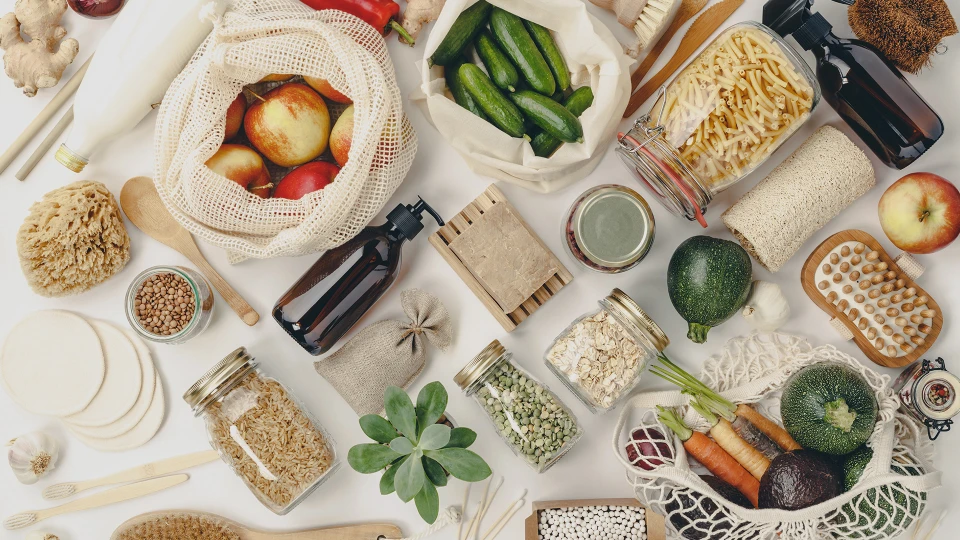
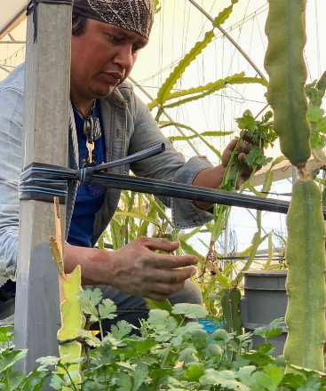

El campo marca el ritmo
Janet y Juan avisan cuándo hay brote de setas; Don Antonio, cuándo el jitomate de Nextetelco está en su punto.
Cada platillo del menú de Recaudo tiene nombre y apellido detrás: la familia que cosechó el jitomate, quien recolectó las setas, quien cuida las gallinas. Este es el menú visto desde el campo.

Así funciona el Menú Vivo
Trabajamos con productores de Cholula, Tepeyahualco, Totimehuacan, Nextetelco y otras comunidades cercanas. Lo que está listo para cortarse define el menú de temporada; lo que se da todo el año sostiene la carta de siempre.
Janet y Juan avisan cuándo hay brote de setas; Don Antonio, cuándo el jitomate de Nextetelco está en su punto.
Con esa cosecha nacen los platillos de temporada: setas, zarzamoras, miel fresca y jitomates asados.
Cada platillo muestra de qué huerta, traspatio o apiario viene antes de que lo pruebes.
Del productor a tu mesa
Un mapa ilustrativo de la región. Toca cada punto para conocer a quien siembra, cría o recolecta lo que llega a la cocina; abajo están todos, con sus videos y los platillos donde aparecen.
Los puntos del mapa son una referencia ilustrativa de la región; no corresponden a coordenadas exactas.
Un ingrediente, muchas posibilidades
El jitomate de Nextetelco es el ingrediente que más veces aparece en el menú de Recaudo: entra en sopa, en pasta, en entrada, en los huevos de la mañana y hasta en la hamburguesa. Una misma caja se reparte entre la cocina de desayunos y la de comidas.
Cinco preparaciones que salen del mismo corte semanal.
El campo cambia, el menú también
Referencias de la cosecha regional que marca la pauta en nuestra cocina. Cada estación transforma el menú con ingredientes de origen fresco.
Participa en el Menú Vivo
Elige el ingrediente que te gustaría encontrar en la cocina la próxima temporada. Los más votados se platican con los productores antes de cada cambio de menú.
Te avisamos cuando cambie la cosecha y con ella la carta de la semana.
Prototipo conceptual: los datos no se envían a ningún servidor.
Por qué lo hacemos así
Comprometidos con apoyar al comercio justo, elaboramos nuestros platillos con ingredientes de temporada provenientes de productores locales. Eso significa que la carta cambia, que algunos platillos duran solo unas semanas y que el dinero de cada cuenta se queda cerca de casa.

De Cuanala a Tepeyahualco: setas, quinoa, huevo, jitomate, chía, miel, café, queso, hierbas y nopales.
Cada uno indica de qué huerta, traspatio o apiario vienen sus ingredientes principales.
Los platillos de temporada pueden variar sin previo aviso. Lo que no está en el campo, no está en la carta.